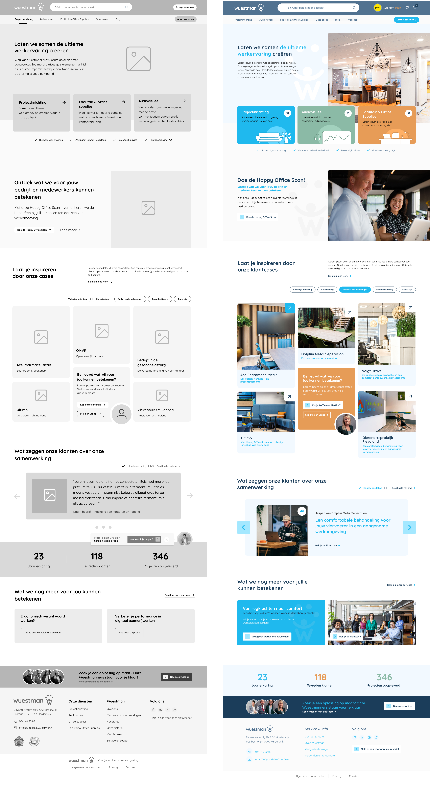
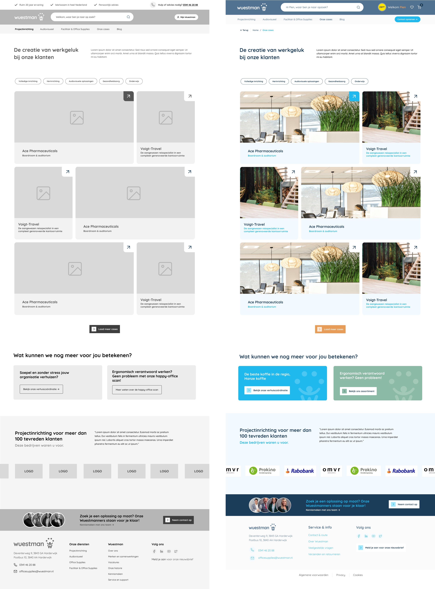
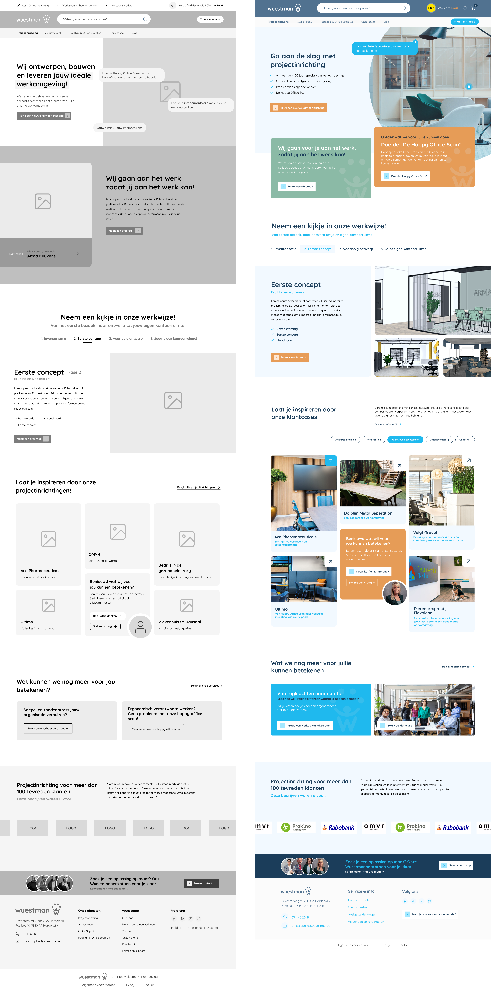

Wuestman
Ik heb aan dit project gewerkt tijdens mijn stage bij Foster. Wuestman is een bedrijf wat zich bezig houdt met projectinrichting, audiovisueel en office supplies. Ze hadden een aantal wensen, maar ik heb voornamelijk gewerkt aan de website. Dit project heb ik niet tot het eind mee kunnen maken. Het liep namelijk nog toen mijn periode bij Foster voorbij was. Alles waar ik mee bezig ben geweest voor Wuestman is op deze pagina te zien.


Home pagina
Cases pagina
Case detailpagina
Project inrichting pagina